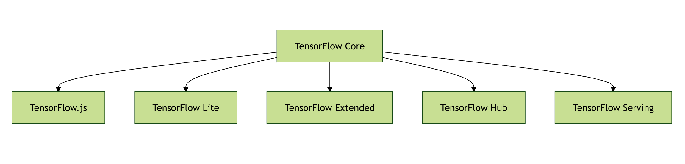
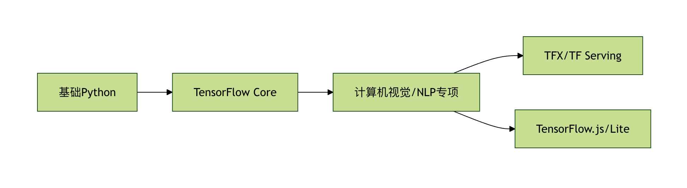

TensorFlow エコシステム
TensorFlow エコシステムは、Googleが開発したTensorFlowコアフレームワークを中心に構築された、包括的な機械学習ツールセットです。基本的な深層学習フレームワークだけでなく、一連の関連ツール、ライブラリ、プラットフォームを提供し、機械学習の全プロセスをカバーするソリューションを形成しています。

TensorFlow コアコンポーネント
TensorFlow Core
TensorFlowのコアフレームワークであり、基本的なテンソル計算と自動微分機能を提供します。
例
import tensorflow as tf
# 定数テンソルを作成する
tensor = tf.constant([[1, 2], [3, 4]])
print(tensor)
# 定数テンソルを作成する
tensor = tf.constant([[1, 2], [3, 4]])
print(tensor)
TensorFlow.js
ブラウザおよびNode.js環境で機械学習モデルを実行できるようにするJavaScriptライブラリです。
例
// ブラウザで事前学習済みモデルをロードする
async function loadModel() {
const model = await tf.loadLayersModel('model.json');
return model;
}
async function loadModel() {
const model = await tf.loadLayersModel('model.json');
return model;
}
TensorFlow Lite
モバイルおよび組み込みデバイス向けに最適化された軽量ソリューションです。
例
// Android で TFLite を使用する
Interpreter.Options options = new Interpreter.Options();
Interpreter interpreter = new Interpreter(modelFile, options);
Interpreter.Options options = new Interpreter.Options();
Interpreter interpreter = new Interpreter(modelFile, options);
拡張ツールとプラットフォーム
TensorFlow Extended (TFX)
エンドツーエンドの機械学習プラットフォームであり、本番環境のMLパイプラインに使用されます。
例
# TFX パイプラインコンポーネントを定義する
example_gen = CsvExampleGen(input_base=path_to_csv)
statistics_gen = StatisticsGen(examples=example_gen.outputs['examples'])
example_gen = CsvExampleGen(input_base=path_to_csv)
statistics_gen = StatisticsGen(examples=example_gen.outputs['examples'])
TensorFlow Hub
事前学習済みモデルのライブラリであり、既存のモデルを簡単に再利用できます。
例
# TF Hub の事前学習済みモデルを使用する
embed = hub.load("https://tfhub.dev/google/nnlm-en-dim128/1")
embeddings = embed(["TensorFlow is great"])
embed = hub.load("https://tfhub.dev/google/nnlm-en-dim128/1")
embeddings = embed(["TensorFlow is great"])
TensorFlow Serving
トレーニング済みモデルをデプロイするための高性能サービスシステムです。
例
# TensorFlow Serving サービスを起動する
tensorflow_model_server --port=8500 --rest_api_port=8501 \
--model_name=my_model --model_base_path=/models/my_model
tensorflow_model_server --port=8500 --rest_api_port=8501 \
--model_name=my_model --model_base_path=/models/my_model
エコシステムの利点比較
| コンポーネント | 主な用途 | 適用シーン |
|---|---|---|
| TensorFlow Core | 基本モデル開発 | 研究、プロトタイプ開発 |
| TensorFlow.js | ブラウザ側ML | Webアプリ、インタラクティブデモ |
| TensorFlow Lite | モバイル/組み込みデバイス | スマートフォンアプリ、IoTデバイス |
| TFX | 本番MLパイプライン | エンタープライズ向けMLシステム |
| TF Serving | モデルデプロイ | オンライン予測サービス |
実際の応用事例
事例1：TFXを使用したレコメンドシステムの構築
- ExampleGenを使用してユーザー行動データをインポートする
- Transformを使用して特徴量エンジニアリングを行う
- Trainerコンポーネントでレコメンドモデルをトレーニングする
- Pusherを使用して本番環境にデプロイする
事例2：モバイル端末での画像分類
- TensorFlow Coreを使用してCNNモデルをトレーニングする
- TensorFlow Lite形式に変換する
- Android/iOSアプリに統合する
- デバイス上のGPUを使用して推論を高速化する
学習パスの提案
- 初心者：TensorFlow Coreから始めて、基本APIを習得する
- Web開発者：TensorFlow.jsを学んでブラウザMLアプリを構築する
- モバイル開発者：TensorFlow Liteとモデル最適化に注力する
- MLエンジニア：TFXを習得して本番レベルのパイプラインを構築する
- システムアーキテクト：TF Servingと分散デプロイを研究する

よくある質問（FAQ）
Q：TensorFlowとPyTorchのエコシステムにはどのような違いがありますか？A：TensorFlowエコシステムは本番デプロイとクロスプラットフォームサポートをより重視していますが、PyTorchは研究コミュニティでより人気があります。
Q：適切なTensorFlowコンポーネントを選択するにはどうすればよいですか？A：アプリケーションのシーンに応じて：WebはTF.js、モバイルはTFLite、本番システムはTFX+TF Servingを選択します。
Q：TensorFlowを学ぶにはどのような前提知識が必要ですか？A：基本的なPythonプログラミング、線形代数と微積分の基礎、基本的な機械学習の概念です。
その他の拡張機能